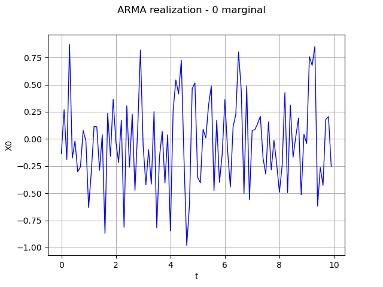
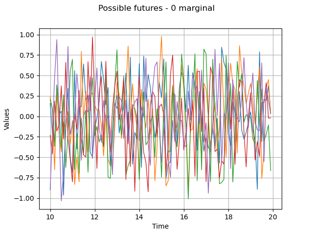

Note
Click here to download the full example code
ARMA process manipulation¶
In this example we will expose some of the services exposed by an  object, namely:
object, namely:
its AR and MA coefficients thanks to the methods getARCoefficients, getMACoefficients,
its white noise thanks to the method getWhiteNoise, that contains the time grid of the process,
its current state, that is its last
 values and the last
values and the last
 values of its white noise, thanks to the method getState,
values of its white noise, thanks to the method getState,a realization thanks to the method getRealization or a sample of realizations thanks to the method getSample,
a possible future of the model, which is a possible prolongation of the current state on the next
 instants, thanks to
the method getFuture.
instants, thanks to
the method getFuture. possible futures of the model, which correspond to
possible prolongations of the current state on the next
instants, thanks to the method
getFuture (, ).
possible futures of the model, which correspond to
possible prolongations of the current state on the next
instants, thanks to the method
getFuture (, ).
from __future__ import print_function
import openturns as ot
import openturns.viewer as viewer
from matplotlib import pylab as plt
import math as m
ot.Log.Show(ot.Log.NONE)
Create an ARMA process
# Create the mesh
tMin = 0.
time_step = 0.1
n = 100
time_grid = ot.RegularGrid(tMin, time_step, n)
# Create the distribution of dimension 1 or 3
# Care : the mean must be NULL
myDist_1 = ot.Triangular(-1., 0.0, 1.)
# Create a white noise of dimension 1
myWN_1d = ot.WhiteNoise(myDist_1, time_grid)
# Create the ARMA model : ARMA(4,2) in dimension 1
myARCoef = ot.ARMACoefficients([0.4, 0.3, 0.2, 0.1])
myMACoef = ot.ARMACoefficients([0.4, 0.3])
arma = ot.ARMA(myARCoef, myMACoef, myWN_1d)
Check the linear recurrence
arma
ARMA(X_{0,t} + 0.4 X_{0,t-1} + 0.3 X_{0,t-2} + 0.2 X_{0,t-3} + 0.1 X_{0,t-4} = E_{0,t} + 0.4 E_{0,t-1} + 0.3 E_{0,t-2}, E_t ~ Triangular(a = -1, m = 0, b = 1))
Get the coefficients of the recurrence
print('AR coeff = ', arma.getARCoefficients())
print('MA coeff = ', arma.getMACoefficients())
Out:
AR coeff = shift = 0
[[ 0.4 ]]
shift = 1
[[ 0.3 ]]
shift = 2
[[ 0.2 ]]
shift = 3
[[ 0.1 ]]
MA coeff = shift = 0
[[ 0.4 ]]
shift = 1
[[ 0.3 ]]
Get the white noise
myWhiteNoise = arma.getWhiteNoise()
myWhiteNoise
WhiteNoise(Triangular(a = -1, m = 0, b = 1))
Generate one time series
ts = arma.getRealization()
ts.setName('ARMA realization')
Draw the time series : marginal index 0
graph = ts.drawMarginal(0)
view = viewer.View(graph)

Generate a k time series
k = 5
myProcessSample = arma.getSample(k)
# Then get the current state of the ARMA
armaState = arma.getState()
# From the armaState, get the last values
myLastValues = armaState.getX()
# From the ARMAState, get the last noise values
myLastEpsilonValues = armaState.getEpsilon()
Get the number of iterations before getting a stationary state
arma.getNThermalization()
Out:
75
This may be important to evaluate it with another precision epsilon
epsilon = 1e-8
newThermalValue = arma.computeNThermalization(epsilon)
arma.setNThermalization(newThermalValue)
Make a prediction from the curent state of the ARMA on the next Nit instants
Nit = 100
# at first, specify a current state armaState
arma = ot.ARMA(myARCoef, myMACoef, myWhiteNoise, armaState)
# then, generate a possible future
future = arma.getFuture(Nit)
Generate N possible futures on the Nit next points
N = 5
possibleFuture_N = arma.getFuture(Nit, N)
possibleFuture_N.setName('Possible futures')
# Draw the future : marginal index 0
graph = possibleFuture_N.drawMarginal(0)
view = viewer.View(graph)
plt.show()

Total running time of the script: ( 0 minutes 0.189 seconds)